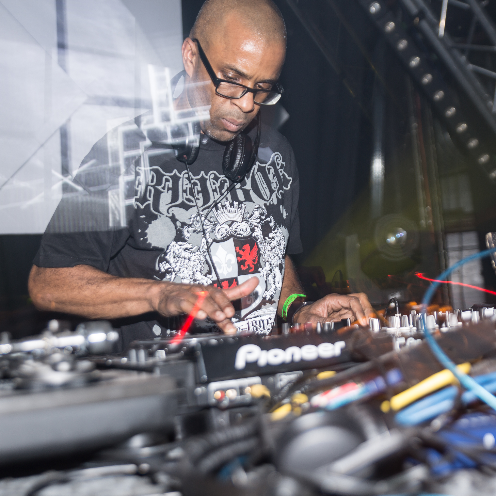

Drum and bass (D&B), also known as drum 'n' bass (DnB or D'n'B), is a genre of electronic dance music that emerged in the United Kingdom in the early 1990s. It is characterised by fast breakbeats (typically 165–185 beats per minute[2][3]) with heavy bass and sub-bass lines,[4] samples, and synthesizers. Originating in the UK jungle scene in the early 1990s, drum and bass drew on elements of reggae, dub, hip hop, breakbeat hardcore, techno, and house.[5][6] By the mid-1990s, it had become one of the most distinctive and technically innovative styles within the broader electronic dance music movement.[4] The style of drum and bass often incorporates an array of influences from other genres including ambient, funk, jazz, soul, rock, and pop.[7] The genre has since developed multiple subgenres and maintains both an underground and mainstream presence worldwide. DJ Dextrous, a trailblazer in the early days of Jungle music, seen here during a performance in Switzerland in 2015. The popularity of drum and bass at its commercial peak ran parallel to several other UK dance styles. A major influence was the original Jamaican dub and reggae sound that influenced jungle's bass-heavy sound. Another feature of the style is the complex syncopation of the drum tracks' breakbeat.[8] Drum and bass subgenres include breakcore, ragga jungle, hardstep, darkstep, techstep, neurofunk, ambient drum and bass, liquid funk (also known as liquid drum and bass), jump up, drumfunk, sambass, and drill 'n' bass. Drum and bass has influenced other genres such as big beat, dubstep, trip hop and has been influenced by hip hop, house, ambient music, techno, jazz, rock and pop.
Drum and bass traces its roots to the UK rave scene and breakbeat hardcore of the late 1980s. Tracks such as Lennie De Ice’s We Are I.E. (1991) combined breakbeats with reggae-influenced basslines and are often cited as precursors to jungle and drum and bass.[10] Early producers including 4hero, Doc Scott, LTJ Bukem, Goldie, and Grooverider began shaping the sound by stripping away elements of hardcore rave music and emphasising bass and complex drum patterns.[11]
With the growth of digital distribution and streaming platforms, drum and bass continued to evolve in the 2010s. Artists such as Pendulum, Chase & Status, and Netsky achieved mainstream chart success while maintaining ties to the underground scene.[17] In the 2020s, the genre has experienced renewed popularity. In 2021, Pitchfork noted a "rising zoomer affinity" for the genre in the 2020s.[18] Streaming in the UK grew by approximately 94% between 2021 and 2024, with a majority of listeners under age 34.[19] Emerging artists such as Nia Archives, Bou, and goddard., alongside established acts like Chase & Status, Sub Focus, and Hybrid Minds, have brought drum and bass to wider audiences through festivals, collaborations, and viral tracks.[20] Purple Sneakers described a "drum n' bass Renaissance" occurring at the time of the publication of their articles in 2023.[21]
Drum and bass incorporates a number of scenes and styles, from the highly electronic, industrial sounds of techstep to the use of conventional, acoustic instrumentation that characterise the more jazz-influenced end of the spectrum.[4][22] The sounds of drum and bass are extremely varied due to the range of influences behind the music. Drum and bass could at one time be defined as a strictly electronic musical genre, with the only "live" element being the DJ's selection and mixing of records during a set. "Live" drum and bass using electric, electronic and acoustic instruments played by musicians on stage emerged over the ensuing years of the genre's development.
A very obvious and strong influence on jungle and drum and bass, thanks to the British African-Caribbean sound system scene, is the original Jamaican dub and reggae sound, with pioneers like King Tubby, Peter Tosh, Sly & Robbie, Bill Laswell, Lee Perry, Mad Professor, Roots Radics, Bob Marley and Buju Banton heavily influencing the music.[26][27] This influence has lessened with time, but is still evident, with many tracks containing ragga vocals.
The Amen break was synonymous with early drum and bass productions but other samples have had a significant impact, including the Apache, Funky Drummer, "Soul Pride", "Scorpio" and "Think (About It)" breaks.[44][45] Early pioneers often used Akai samplers and sequencers on the Atari ST to create their tracks.[46]
Of equal importance is the TR-808 kick drum, an artificially down-pitched or elongated bass drum sound sampled from Roland's classic TR-808 drum machine, and a sound which has been subject to an enormous amount of experimentation over the years.[47]
Many drum and bass tracks have featured more than one sampled breakbeat in them and a technique of switching between two breaks after each bar developed. A more recent commonly used break is the "Tramen", which combines the Amen break, a James Brown funk breakbeat ("Tighten Up" or "Samurai" break) and an Alex Reece drum and bass breakbeat.[48] The relatively fast drum beat forms a canvas on which a producer can create tracks to appeal to almost any taste and often will form only a background to the other elements of the music. Syncopated breakbeats remain the most distinctive element as without these a high-tempo 4/4 dance track could be classified as techno or gabber.[49]
The genre places great importance on the bassline, in this case a deep sub-bass musical pattern which can be felt physically through powerful sound systems due to the low-range frequencies favoured. There has been considerable exploration of different timbres in the bass line region, particularly within techstep. The bass lines most notably originate from sampled sources or synthesizers. Bass lines performed with a bass instrument, whether it is electric, acoustic or a double bass, are less common.
Atmospheric pads and samples may be added over the fundamental drum and bass to provide different feels. These have included "light" elements such as ambient pads as found in ambient electronica and samples of jazz and world musics, or "dark" elements such as dissonant pads and sci-fi samples to induce anxiety in the dancer.